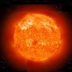
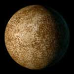
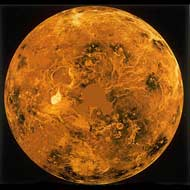
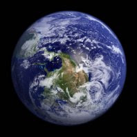
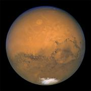
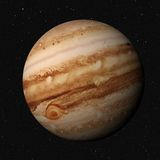
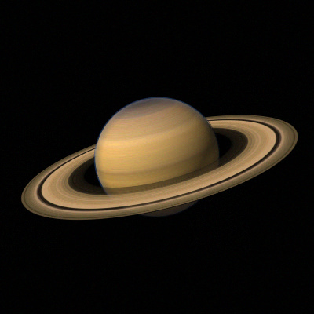
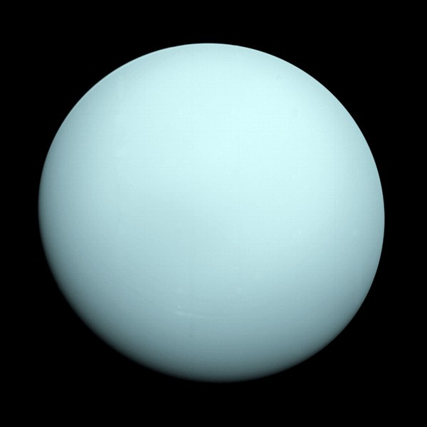

Sun:
The Sun is the star at the center of the Solar System.It is a nearly perfect sphere of hot plasma,
heated to incandescence by nuclear fusion reactions in its core, radiating the energy mainly as
visible light and infrared radiation. It is by far the most important source of energy for life
on Earth.Its diameter is about 1.39 million kilometres (864,000 miles), or 109 times that of Earth

Mercury:
Mercury's surface is similar in appearance to that of the Moon, showing extensive mare-like plains
and heavy cratering, indicating that it has been geologically inactive for billions of years.Because
knowledge of Mercury's geology had been based only on the 1975 Mariner 10 flyby and terrestrial
observations, it is the least understood of the terrestrial planets.

Venus:
Venus is the second planet from the Sun. It is named after the Roman goddess of love and beauty.
As the second-brightest natural object in Earth's night sky after the Moon, Venus can cast shadows
and can be, on rare occasion, visible to the naked eye in broad daylight.
Venus lies within Earth's orbit, and so never appears to venture far from the Sun, either setting
in the west just after dusk or rising in the east a bit before dawn. Venus orbits the Sun every 224.7
Earth days.

Earth:
Earth is the third planet from the Sun and the only astronomical object known to harbor life. About 29% of
Earth's surface is land consisting of continents and islands. The remaining 71% is covered with water, mostly
by oceans but also by lakes, rivers and other fresh water, which together constitute the hydrosphere. Much of
Earth's polar regions are covered in ice. Earth's outer layer is divided into several rigid tectonic plates
that migrate across the surface over many millions of years.

Mars:
Mars is the fourth planet from the Sun and the second-smallest planet in the Solar System,
being larger than only Mercury. In English, Mars carries the name of the Roman god of war and
is often referred to as the "Red Planet".The latter refers to the effect of the iron oxide
prevalent on Mars's surface, which gives it a reddish appearance distinctive among the astronomical
bodies visible to the naked eye.

Jupiter:
Jupiter is the fifth planet from the Sun and the largest in the Solar System.
It is a gas giant with a mass one-thousandth that of the Sun, but two-and-a-half times that of all the
other planets in the Solar System combined. Jupiter is one of the brightest objects visible to the
naked eye in the night sky and has been known to ancient civilizations since before recorded history.
When viewed from Earth, Jupiter is on average the third-brightest natural object in the night sky after
the Moon and Venus.

Saturn:
Saturn is the sixth planet from the Sun and the second-largest in the Solar System, after Jupiter.
It is a gas giant with an average radius of about nine times that of Earth. It only has one-eighth
the average density of Earth; however, with its larger volume, Saturn is over 95 times more massive.
Saturn is named after the Roman god of wealth and agriculture; its astronomical symbol represents the
god's sickle. The Romans named the seventh day of the week Saturday, Sāturni diēs no later than the 2nd
century for the planet Saturn. Saturn's interior is most likely composed of a core of iron–nickel and
rock.

Uranus:
Uranus is the seventh planet from the Sun. Its name is a reference to the Greek god of the sky,
Uranus, who, according to Greek mythology, was the grandfather of Zeus and father of Cronus.
It has the third-largest planetary radius and fourth-largest planetary mass in the Solar System.
Uranus is similar in composition to Neptune, and both have bulk chemical compositions which differ
from that of the larger gas giants Jupiter and Saturn. For this reason, scientists often classify
Uranus and Neptune as "ice giants" to distinguish them from the other gas giants.

Neptune:
Neptune is the eighth and farthest-known Solar planet from the Sun. In the Solar System, it is the
fourth-largest planet by diameter, the third-most-massive planet, and the densest giant planet. It is
17 times the mass of Earth, slightly more massive than its near-twin Uranus. Neptune is denser and
physically smaller than Uranus because its greater mass causes more gravitational compression of its
atmosphere. The planet orbits the Sun once every 164.8 years at an average distance of 30.1 AU. It is
named after the Roman god of the sea and has the astronomical symbol ♆, a stylised version of the god
Neptune's trident.